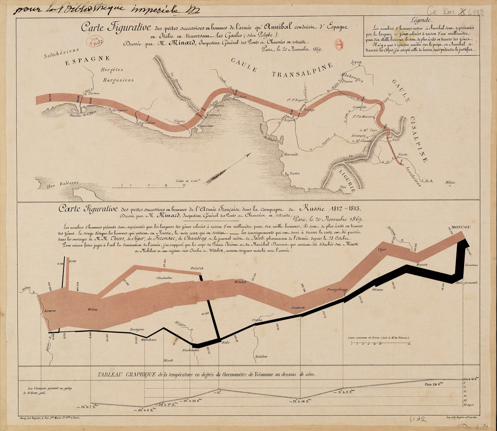

About
Thinking in graphs
Graphs are one of the most natural things we already think in, a map, a family tree, a group chat, a subway line. Long before anyone called it graph theory, we were reading the world as things connected to other things. This site starts from that intuition and tries to carry it all the way into graph neural networks.
Top: Hannibal's crossing of the Alps, 218 BC.

Six variables in one image: army size, direction, geography, temperature, read at a glance, with no legend required. That's the whole case for graphs, they don't just store connections, they store meaning in the connections. A social graph isn't just who follows whom, it's a proxy for influence and reach. The web graph isn't just links, it's the reason search works at all: PageRank is, underneath everything, a very large graph algorithm wearing a business suit.
Why I built this
Graph Neural Networks have a reputation for being dense, notation heavy, and generally unapproachable, even though most of us already reason in graphs constantly. Data scientists, engineers, product managers, we're all comfortable drawing boxes and arrows to explain a system, we just don't always call it a graph.
My goal with this site was to close that gap. Not by writing another textbook, but by leaning into the graphical intuition most of us already carry, and using it as a bridge into the actual research. From the earliest spectral methods on graphs, through message-passing networks, to today's graph transformers, I wanted one place that treats the last decade of GNN research as a single connected story instead of a pile of disconnected papers.
How to explore the Atlas
The Atlas is built to be read like a family tree, not a syllabus. Start wherever a paper looks unfamiliar, follow its edges backward to see what it grew out of, and forward to see what it led to. Most ideas make a lot more sense once you've seen the one or two papers that came right before them.
That said, the Atlas is a map, not the territory. Once a node is filled in, I'd genuinely recommend reading the short synthesis alongside the original paper itself. A few of these, GraphSAGE and GAT especially, are written clearly enough that the paper is the best explanation you'll find anywhere, better than anything I could summarize here.
A few prerequisites: nothing here assumes the math, but a working, intuitive sense of a few ideas from outside graphs will make the Atlas easier to follow. If you're rusty on representation learning, embeddings, word2vec, the attention mechanism, or transformers, these are good places to start. I'd add one more: a good chunk of the early Atlas (GCN, ChebNet) is literally convolution carried over from images to graphs, so a quick pass through convolutional neural networks helps too.
← Back home